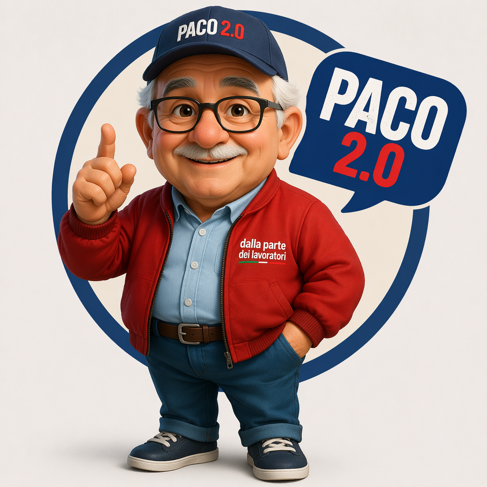

El compañero virtual que responde a las preguntas de trabajadoras y trabajadores. Orientación informativa sobre derechos, problemas en el trabajo y primeros pasos a seguir. No sustituye a un abogado ni a un sindicalista.
Haz clic en una pregunta para empezar.
Las respuestas deben verificarse siempre según el contrato, el país, el sector y la situación concreta. Para casos urgentes, contacta con un sindicato, la inspección de trabajo o un abogado.